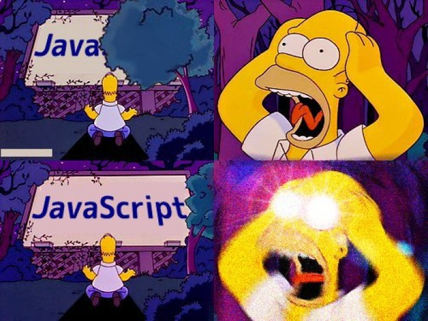
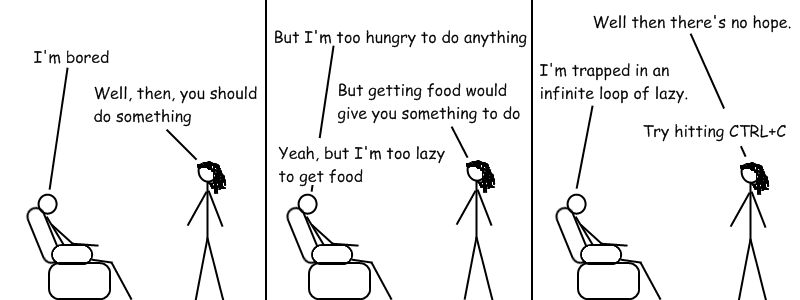

2. JavaScript
2.1 ¿Qué es programar?
Códigos
- Morse
- Codigo civil
- El ADN

Cuando programamos, nos interesan los códigos que transmiten un tipo de idea:
INSTRUCCIONES
Algoritmos
Algoritmo.Una lista ordenada de pasos cuyo proposito es hacer algo, y debe ser entendible para aquellos que lo haran (o ejecutaran).¿Qué es programar?
Simple, programar es escribir algoritmos en un lenguaje de programación.
Asi mismo, un Lenguaje de Programación, es un lenguaje formal
que definido por una sintaxis y una semantica (igual que el Español).
2.2 Javascript: El lenguaje de programación de la web
JavaScript es un lenguaje interpretado, y es comúnmente abreviado
como JS.
Cada navegador tiene su propio intèrprete de JavaScript, tambien
llamado engine.
Los programas escritos en JavaScript son llamados scripts.
Historia
- 1995: En Netscape, Brendan Eich crea "JavaScript".
- 1996: Microsoft lanza "JScript", una copia para IE3.
- 1997: JavaScript se estandariza en la especificacion "ECMAScript".
- 2005: Se crea "AJAX" y comienza la era de la Web 2.0.
- 2010: Node.JS fue lanzado.
- 2015: ECMAScript 6 fue lanzado.
2.3 JavaScript: Variables
¿Qué es una variable?
Necesitamos almacenar datos: la puntuacion en un juego, el nombre
del usuario, etc.
Una variable es un valor nombrado (o un valor con un significado),
que representa un dato.
El valor de la variable puede cambiar, pero su significado nunca.
Podemos ver las variables como contenedores de valor.

Sintaxis
Para declarar e inicializar una variable, debemos seguir la siguiente sintaxis:
// let name;
let x;
// name = value;
x = 5;
O todo en una sola linea de codigo.
// let name = value;
let x = 5;
Para sustituir o reasignar un valor:
let x = 5;
x = 1;
En versiones anteriores a la ES6, se ocupaba la sintaxis:
var name = value;
Operador de asignación
El símbolo = representa una asignación. Su funcion es
asignar el valor que esta a su lado DERECHO a la variable que esta
en su lado IZQUIERDO.
Si se necesita, el valor debe ser calculado antes de la asignación.
let width = 50;
let areaTriangle = (width * 100) / 2;
// Usa console.log para imprimir un valor
console.log(areaTriangle);
Tipos de datos primitivos
String: Secuencia de caracteres.
let greeting = 'Hello Diego';
let greatUniversity = "CENTRO";
let myAge = 5;
let myDebt = 9.10;
Tipos de datos primitivos
Booleano: Representa un valor logico: false o
true.
let catsAreBest = true;
let isRaining = false;
let absoluteTruth;
Debilmente tipado
JS es un lenguaje de programación debilmente tipado. Esto significa
que no debes especificar el tipo de dato cuando una variable es
declarada.
JS averigua el tipo en base a su valor, y el tipo puede cambiar.
let myName = 'Diego';
myName = 2;
myName = true;
Constantes
Por motivos de eficiencia, si el valor de una variable es constante, es mejor declararla como:
const x = 10;
2.4 Comentarios
Los comentarios son instrucciones ignoradas por la computadora y su motivo son que los humanos entiendan codigo no obvio o para documentacion.
// Single line comments
let x = 4;
/*
Comments in multiple lines (for long descriptions)
*/
2.4 Funciones
A menudo vamos a necesitar repetir una tarea muchas veces, y es muy
molesto y confuso escribir la misma pieza de codigo repetidamente.
let radius = 10.0;
const pi = 3.1416;
const areaCircle = pi * radius * radius;
radius = 30.0;
const areaCircle2 = pi * radius * radius;
const areaCircle = calculateArea(10.0);
const areaCircle2 = calculateArea(30.0);
Aspectos de las funciones
- Son modulos "auto-contenidas" que se enfocan en resolver una tarea especifica.
- Usualmente "toman" valores, los procesan y "regresan" un resultado.
- Los valores que toman son los datos de entrada o los argumentos.
- Una vez que es escrita, se puede usar una y otra vez.
- JS provee muchas funciones ya listas para usarse.
- Una vez escrita, nos dejamos de preocupar como es que hace lo que hace y solo "la ocupamos".
Sintaxis
Para definir una funcion:
// ES5:
function functionName (arguments) {
// Function body
// ...
}
// ES6:
const functionName = (arguments) => {
// Function body
// ...
};
Sintaxis
Una vez definida una funcion, podemos llamarla usando parentesis y pasando los valores de los argumentos:
functionName(values);
Ejemplo
const sayHello = () => {
console.log('Hello!');
};
sayHello();
Argumentos
Las funciones pueden necesitar datos para realizar la tarea deseada.
Esos datos son llamados argumentos o datos de entrada, y funcionan
como variables predefinidas dentro de la funcion. Los valores de
los argumentos son dados por quien la manda a llamar.
// ES5:
function functionName (arg1, arg2, arg3, ...) {
// function body
}
// ES6:
const functionName = (arg1, arg2, arg3, ...) => {
// function body
};
Ejemplos
const sayHello = (name) => {
console.log('Hello' + name + '!');
};
sayHello('Diego');
sayHello('Esther');
const addNumbers = (num1, num2) => {
var result = num1 + num2;
console.log(result);
};
addNumbers(7, 21);
Valores de retorno
Muy comunmente, las funciones regresan algun tipo de valor. Para
ello usamos la palabra return seguido del valor a
regresar.
const functionName = () => {
// ...
return x;
};
let x = 10;
return x;
return false;
const name = 'Pedrito';
return name;
Valores de retorno
Tambien es importante decir que despues de la instruccion return
ningun codigo debajo se ejecutara.
const functionName = () => {
// ...
return x;
// Esto NUNCA se va a ejecutar
console.log(123);
const a = x + 100;
};
Ejemplo
const addNumbers = (num1, num2) {
var result = num1 + num2;
return result;
};
var sum = addNumbers(5, 2);
console.log(sum);
var biggerSum = addNumbers(2, 5) + addNumbers(3, 2);
var hugeSum = addNumbers(addNumbers(5, 2), addNumbers(3, 7));
Alcance de una variable
Las variables solo "viven", es decir, estan definidas en el bloque
del código (como el cuerpo de una funcion) donde esta definida.
Esto significa que sera visible en la funcion que esta definida.
Las partes del codigo donde una variable es visible es llamada su
"alcance" o su scope.
Alcance local
const addNumbers = (num1, num2) => {
var result = num1 + num2;
console.log("The result is: " + result);
};
addNumbers(5, 7);
console.log(result);
Alcance global
let result;
const addNumbers = (num1, num2) => {
result = num1 + num2;
console.log("The result is: " + result);
};
addNumbers(5, 7);
console.log(result);
2.5 Control de flujo del codigo
The last code bender.

Conditionals (if)
The programs need to take decisions (execute or not a bunch of code).
These decisions are based on a condition.
A condition is a question whose answer is a boolean value:
true or false.
With the if statement JS make a conditional.
if (condition) {
// statements to execute
}
Example (if):
var x = 5;
if (x > 0) {
console.log('x is a positive number!');
}
if (isRaining()) {
useUmbrella();
}
Comparision operators
var n = 28;| Operator symbol | Name | Example |
|---|---|---|
| === | Strict equality | n == 28 n === '28' |
| !== | Strict inequality | n !== 28 n !== '28' |
| > | Greater than | n > 25 n > 30 |
| < | Lower than | n < 31 n < 23 |
| >= | Greater or equal than | n >= 28 |
| <= | Lower or equal than | n <= 28 |
Logical operators
var a = 4;
var b = -2;
| Operator symbol | Name | Example |
|---|---|---|
| && | AND | a > 0 && b < 0 4 > 0 && -2 < 0 |
| || | OR | a > 0 || b > 0 4 > 0 || -2 > 0 |
| ! | NOT | !(a === b) !(a < 0) |
Can combining together multiple conditions (be careful with the parenthesis):
var myAge = 28;
if ((myAge > 0 && myAge < 5) || (myAge > 70)) {
console.log('MB free!');
}
Using values as false
The empty string (''), the number 0, undefined and
null act as false.
var name = '';
if (name) {
console.log('Hello, ' + name);
}
var points = 0;
if (points) {
console.log('You have ' + points + ' points');
}
var firstName;
if (firstName) {
console.log('Your name is ' + firstName);
}
Complete conditionals: if-else
To make a complete conditionals: code that is executed when the condition is satisfied and code when not.
var age = 18;
if (age > 16) {
console.log('Yay, you can drive!');
} else {
console.log('Sorry, but you have ' + (16 - age) + ' years til you can drive.');
}
Multiple conditionals: if-else if-else
var age = 20;
if (age >= 35) {
console.log('You can vote AND hold any place in government!');
} else if (age >= 25) {
console.log('You can vote AND run for the Senate!');
} else if (age >= 18) {
console.log('You can vote!');
} else {
console.log('You have no voice in government!');
}
Iterations (while)
Repeat a task multiple times is make iterations.
Are two ways to view the iterations: until a condition it no longer
satisfied or counting.
For the first way, JS use the statement while.
while (condition) {
// statements to repeat
}
var x = 0;
while (x < 5) {
console.log(x);
x = x + 1;
}
BEWARE INFINITE LOOPS
Iterations (for)
The other way to make iterations is counting.
for (initialize; condition; update) {
// statements to repeat
}
for (var i = 0; i < 5; i = i + 1) {
console.log(i);
}
Break a loop
To prematurely exit a loop, use the break statement.
for (var current = 100; current < 200; current++) {
console.log('Testing ' + current);
if (current % 7 == 0) {
console.log('Found it! ' + current);
break;
}
}
2.5.5 JavaScript: Arrays
For hold multiple values in one single variable we can use arrays.
An array is a type of data-type that holds an ordered list of values,
of any type.
Syntax
var arrayName = [element0, element1, ...];
var arrayName = [];
var rainbowColors = ['Red', 'Orange', 'Yellow', 'Green', 'Blue', 'Indigo', 'Violet'];
var raceWinners = [33, 72, 64];
var myFavoriteThings = ['Play guitar', 666, 'Web media course'];
The length property reports the size of the array:
console.log(courseStudents.length);Array access
You can access items with "bracket notation". The index starts at 0.
var arrayItem = arrayName[indexNum];
var rainbowColors = ['Red', 'Orange', 'Yellow', 'Green', 'Blue', 'Indigo', 'Violet'];
var firstColor = rainbowColors[0];
var lastColor = rainbowColors[6];
Modification
You can also use bracket notation to change the item in an array:
var myFavoriteThings = ['Play guitar', 666, 'Web media course'];
myFavoriteThings[0] = 'Drunk beer';
myFavoriteThings.push('Coding');
Functions as variables
JS is a "first-class" language: support treat the functions like a variable.
function mistery(otherFunction, a, b) {
return otherFunction(a) + otherFunction(b);
};
function g(x) {
return x * x;
}
var f = function(x) {
return x + x;
}
mistery(g, 4, 9);
mistery(f, 4, 9);
2.5.6 JavaScript: Objects
One of the most popular and useful concept in modern code is the
objected-oriented programming (OOP).
- The goal of the POO is get a model of a "world" with entities, called objects, and its actions and relations with other objects.
- Its called "objects", because can be compared with objects in real life.
- This paradigm is useful because its easy view a script thinking in objects and situations in real life. So programming is like to write a film script.
How to model an object of a "world"?
An object type is defined by its: characteristics and capabilities.
characteristicsEach object is an instance of an object type.
Objects in JavaScript
- JavaScript is designed on a really simple object-based paradigm.
- JavaScript has a multiple predefined objects.
- To the characteristics of an object we called its properties.
- To the capabilities of an object we called its methods.
- Exist two ways to create an object: literal way, and Prototype way (using new).
-
In the literal method, we use the curly brackets:
{}; // This is an object var objectName = {};
Object Properties
- Each property is an association of a key, or name, and a value.
- A property can be seen as a variable attached to the object.
- An object cannot have two properties with the same key.
- The property key is separated of its value with a colon.
- Each property is separate by a coma (EXCEPT THE LAST ONE).
-
Example:
var object = { property1 : value1, property2 : value2 }; var myCar = { brand: 'Porsche', speed: 100, color: 'black', hasSunroof: true };
Access to a property
- There are two ways to retrieve the values of an object: with the member operator (dot notation) and with brackets.
-
The member operator (a dot .) access to the value of the property
with the name put in the right associated to the object put
in the left.
var brandOfMyCar = myCar.brand; var currentSpeed = myCar.speed; console.log(aboutMe.hometown); - With brackets, put the object name and closed in square brackets the key of property to retreive in string.
var colorOfMyCar = myCar['color'];
var keyName = 'hairColor';
console.log(aboutMe[keyName]);
Modifying properties
Using dot notation or brackets in combination with the assign operator we can change the value of an object property.
myCar.color = 'white';
aboutMe['hairColor'] = 'gold';
delete myCar.hasSunroof;
delete aboutMe['hometown'];
me.hairStyle = 'very cool';
delete aboutMe.dignity;
Object Methods
- A method is an action that an object can execute.
- Each method can be viewed as a property, but the value is a anonymous function.
-
The syntax is the same of the propety.
var myCar = { brand: 'Porsche', speed: 100, color: 'black', accelerate: function () { this.speed += 0.1; }, break: function () { if (this.speed > 0) { this.speed -= 0.1; } } }; - The this variable in a method is a reference to object that in the owner.
Execute a method
Execute an object method is similar to call a function but with the member access with dot notation or brackets.
myCar.accelerate();
var myCat = {
name: 'Daemon',
age: 1,
furColor: 'grey',
meow: function() {
console.log('meowww');
}
};
myCat.eat = function (food) {
console.log('Yum, I love ' + food);
};
myCat.eat('Tia helen');
Member types
| Property | string |
| number | |
| boolean | |
| array | |
| object | |
| Method | function |
Example:
var me = {
hometown: 'CDMX, México',
hair: 'black',
wearGlasses: true,
birthday: { day: 2, month: 'September' },
grades: [ 10, 9, 10 ]
sayHello: function () {
console.log('Hello!');
}
};
var myCar = {
brand: 'Porsche',
speed: 100,
color: 'black',
owner: me
};